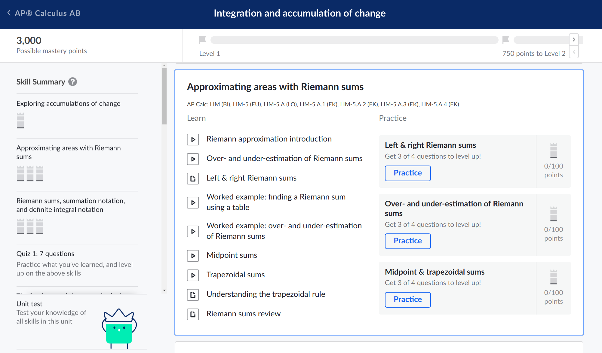
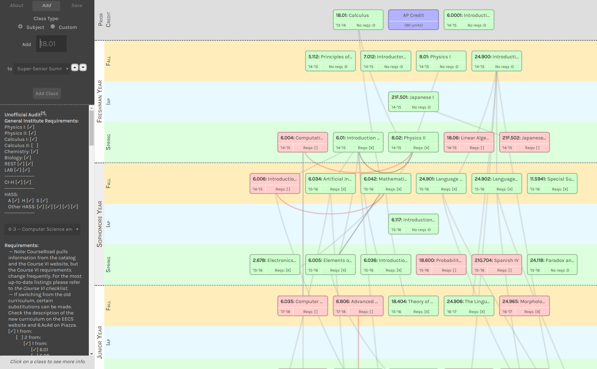
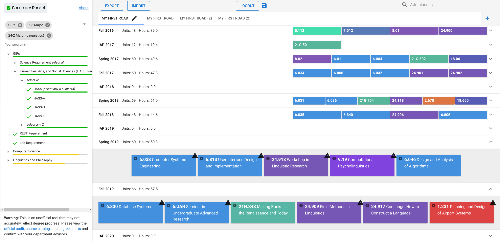
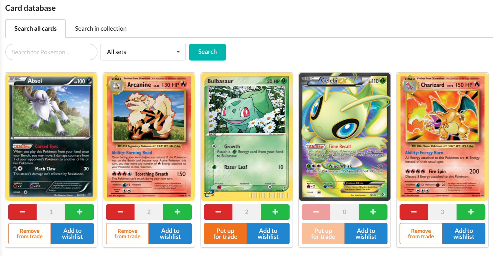

UI / Web Design Portfolio
Here is a brief view of some of the web UI-related work I have done. This page was prepared for teamLab, a Tokyo-based digital art company, as part of an application for the MIT-Japan program.
Khan Academy
Khan Academy is a non-profit organization dedicated to providing a free world-class education for anyone, anywhere. Its platform consists of thousands of videos and online exercises with instantaneous feedback on all topics in the K–12 curriculum.
I interned at Khan Academy twice. My first summer in 2017, I was a novice to web programming and spent the first week of my internship learning HTML, JavaScript, and React. I practiced those new skills over the summer by building several features for the webapp. One of those features was a new topic page that allows students to better view their progress and understand the topics to study in a module.
The new topic page my team and I built, which shows students which topics and exercises to work on.
During my second summer, I was a returning intern and thus had more flexibility and responsibility in my work. Working with John Resig (the creator of jQuery!) as my mentor, I contributed to the company's efforts to reduce frontend technical debt. We created Wonder Blocks, a React-based component system, to consolidate design and programmatic components in our main webapp codebase. My open-source contributions are viewable here.
I designed the API for and implemented dropdowns, select menus, checkboxes, and radio buttons. The components had to be configurable for all use cases on the webapp, and the API had to be easy for other devs to use. I also took accessibility standards into account. To see and play around with the components I created in a sandbox, please take a look at the Dropdown (specifically ActionMenu, SingleSelect, MultiSelect) and the Form (specifically CheckboxGroup and RadioGroup) components.
Samples of the components I created. For interactive examples, please visit the Wonder Blocks Dropdown and Form sections.
Courseroad 2.0
One of the most popular course-planning tools that MIT students use is Courseroad, a web application that allows them to plan out their four-year academic schedules and see how the course selection fulfills graduation requirements. The original tool existed before I started at MIT, but it was no longer maintained. Course listings and major requirements were out of date, bugs were never fixed, and certain parts of the UI were terribly unintuitive. So a few friends and I decided to design and build a modern version of Courseroad! It is still a work in progress and we are still improving it, but the application is deployed, and we have real users!
Try our re-designed application here.
The old version of Courseroad, which had an unintuitive UI and out-of-date requirements and course listings.

Our re-design of Courseroad, with more features and updated requirements and listings.
6.813 User Interface Design & Implementation
After my initial experiences with web programming and UI design, I decided to take MIT's class on the topic. In this class, we learned about the foundations of interface design and also focused a lot on the importance of user testing. Throughout the semester, we designed an interface and improved it iteratively through user testing. My team designed an application to help Pokémon card collectors keep track of their collections. I was in charge of designing and implementing the card database page.
You can try out the database page I built here. Keep in mind that this is a UI mockup, and there is no backend to this application.
Thanks for looking through some of my projects! I enjoy designing and building usable interfaces and thinking about ways to convey information and affordances. You may contact me at ksmori [at] mit [dot] edu.